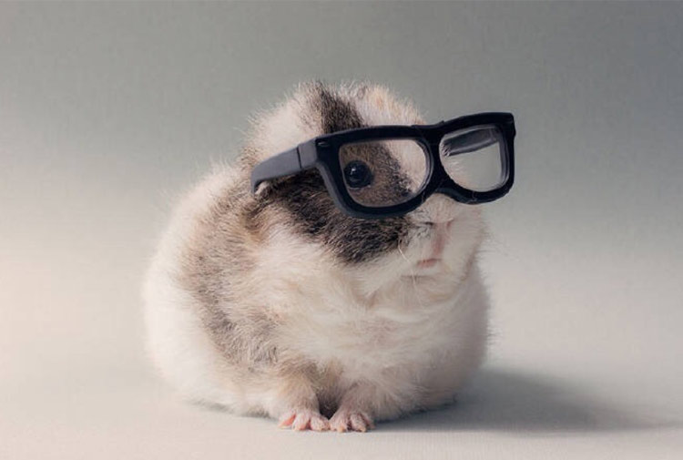
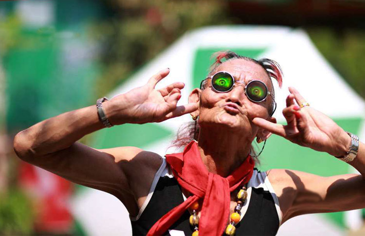
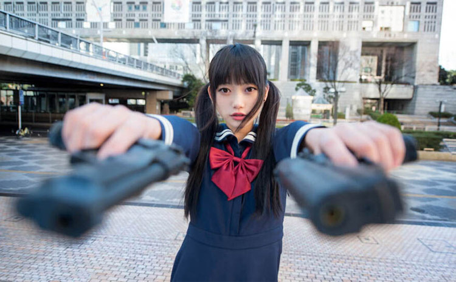
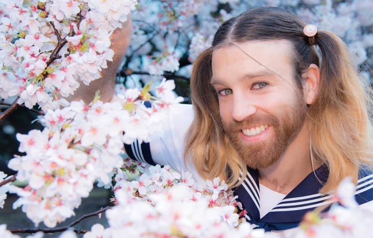

参考我们老祖宗传下来的定义，“萌”这个字是动词属性，常用来表示草木发芽等现象。然而，好景不长，在山的那边海的那边有一群日本御宅族，他们用这个词来形容极端喜好的事物，但是通常都是对女性而言。03年左右，日本东京一些地区的大神创造了“萌”这个字的新解释，随后太平洋的风把这个新鲜好玩的含义吹到了我大天朝。千千万万二次元爱好者用生命对此进行了弘扬，“萌”成了一股迅速席卷全国的风潮，哪天不萌一下你都不好意思出门。
婴儿肥很萌，嘟嘟嘴很萌，粉红色的皮肤很萌，撒娇耍赖也萌，双马尾最萌！当年《阳光灿烂的日子》这部电影里，梳着两个马尾的米兰，美的马小军的整个青春都充满了斑斓的色彩。
每个人心里都住着一个萌萌的自己，所以不管是胡子拉碴的中年大叔还是更年期手足无措的大妈，再或者是菜市场笑容满面的阿姨、写字楼里正襟危坐的白领，总会在灵光乍现的一个瞬间，卖上一个萌。卖萌这件小事，在很多人身上是可以可以原谅的，比如年轻貌美的姑娘对男朋友嘟嘟嘴说想要吃冰淇淋。在一些人身上是不可容忍的，比如人到中年还不服老，胡子拉碴去买菜，为了讲价和菜市场阿姨疯狂卖萌……围观群众忍无可忍，默默拿起电话“喂，110吗，这里有人卖萌，场面快控制不住了……”
但是总要有个机会能光明正大的卖萌，那就去参加今天日本的双马尾日吧！
日本有一个神秘的协会，成立这个协会的目的是为了向全世界宣传双马尾的魅力，让双马尾获得新生。协会会长认为：现在扎双马尾的多为小孩和学生，扎着双马尾的成年女性很少很少。在孩提时代，很多女性都会憧憬着扎着双马尾的生活，但长大后就逐渐减少。他担心在以后的时间里这种可爱，还带有萌萌味道的发型是否会消失，所以建立了这个日本双马尾协会，以全新的面貌向世人介绍双马尾，解除双马尾仅限小孩和学生的偏见，希望双马尾能获得新生。
在双马尾协会成员的不懈努力下，从2012年起，2月2日成为了日本的双马尾日。节日当天，有点头发的人都会扎起两个可爱的马尾、实在没头发的人或许会选择假发，他们无所不用其极的加入到萌萌的双马尾大军中去，并晒出自己的双马尾照片去影响身边的人。所以，连满脸络腮胡的大叔都忍不住了！
社交网络将这一节日的影响力发挥到了极致，2015年的双马尾日，微博带话题讨论瞬间突破十万，并衍生出了“双马尾大赛”、“双马尾教程”等话题。即使在中国，也有很多人因为双马尾而感受到快乐。还等什么呢，梳起萌萌的双马尾，嗨起来吧！
1、每年的2月2日是日本的双马尾日，这个节日的设立是为了让双马尾这个发型重获新生；
2、如果不喜欢卖萌，你也可以选择继续做一个安静的美男子！